编辑与协作工作台
左侧文档树 + 中间编辑 + 右侧预览，支持版本冲突检测与修订记录。
围绕“可协作、可分享、可治理、可持续”四个目标设计。
左侧文档树 + 中间编辑 + 右侧预览，支持版本冲突检测与修订记录。
独立阅读页 ` /r/:spaceId/:docId `，对 SEO 更友好，适合知识门户场景。
`owner / collaborator / reader` + 可见性控制，覆盖团队内部协作边界。
附件下载鉴权、预览分流、私有存储签名链接、后台资源管理与自动清理。
登录/注册验证码分级、临时封禁、后台高风险操作令牌、统一错误码体系。
后台内置审计日志、系统配置、数据清理策略，便于长期运营维护。
保持单体部署体验，同时保留 SSR 能力与工程化边界。
关键设计：让“部署复杂度”与“产品能力”解耦。默认可单容器运行，后续再按规模平滑扩展。
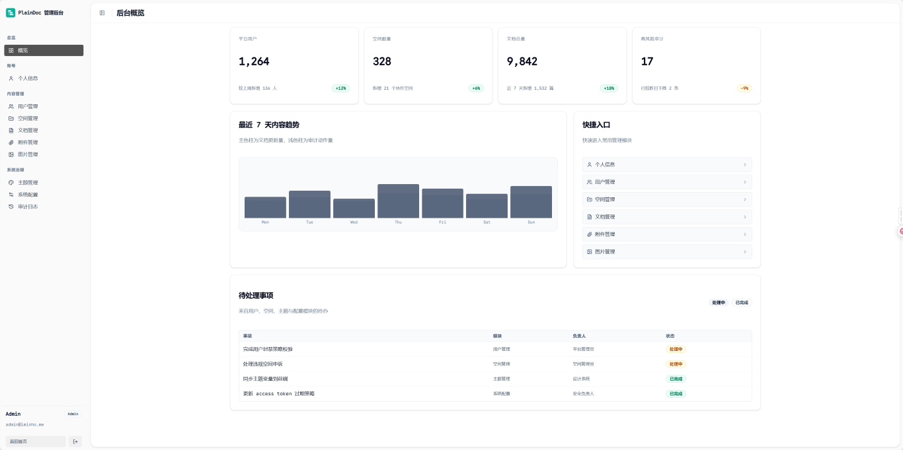
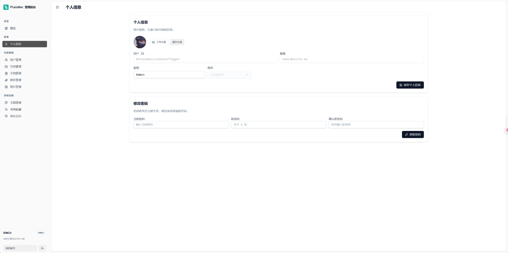
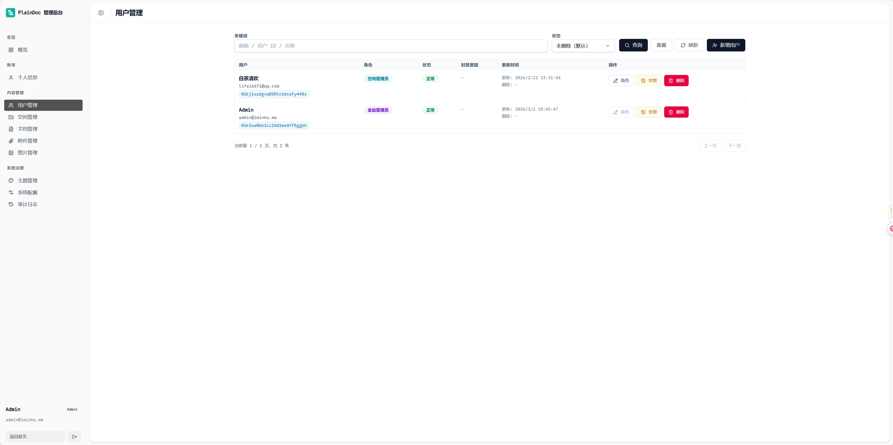
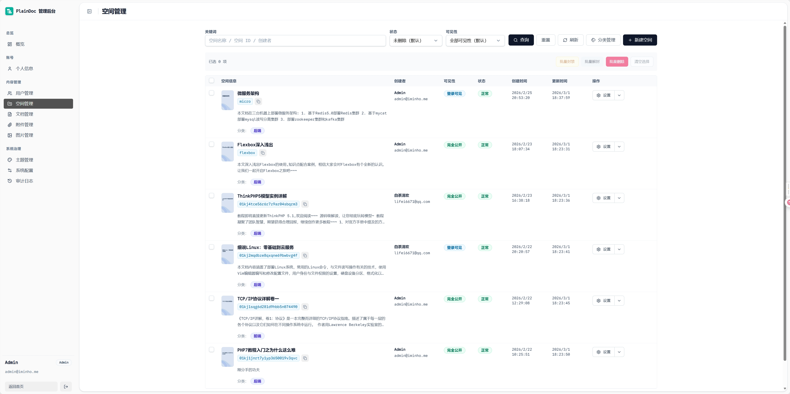
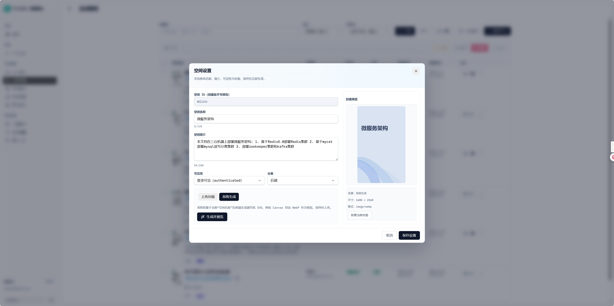
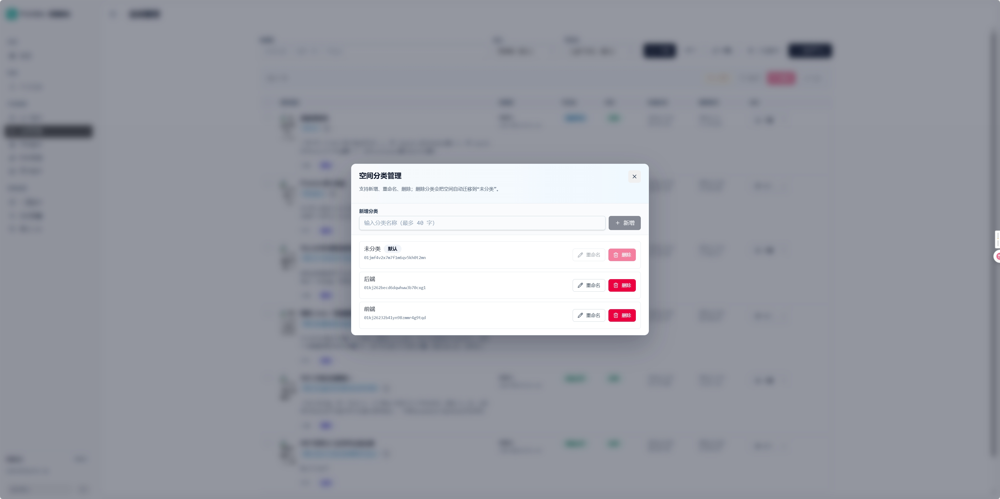
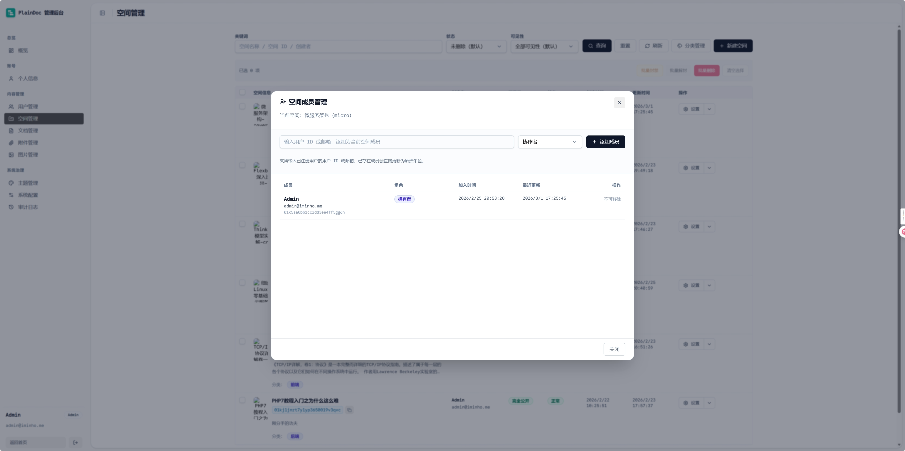
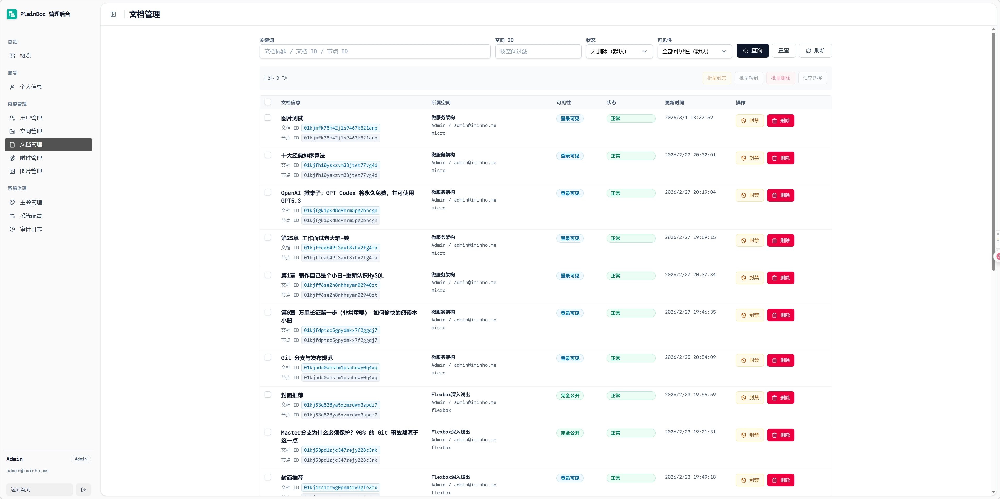
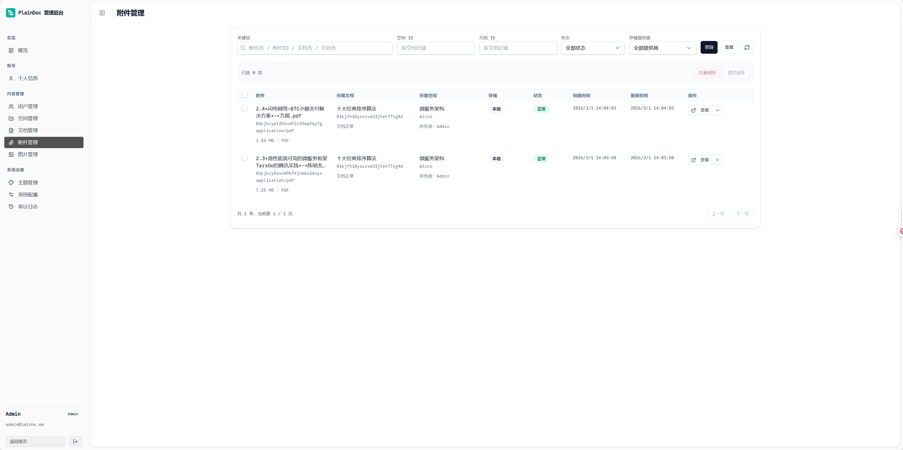
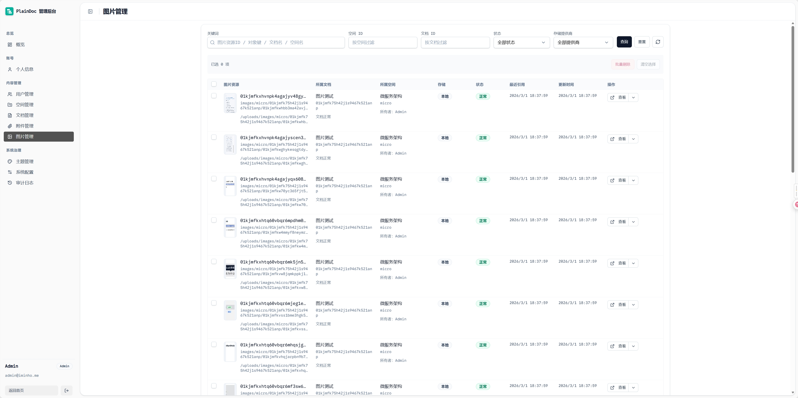
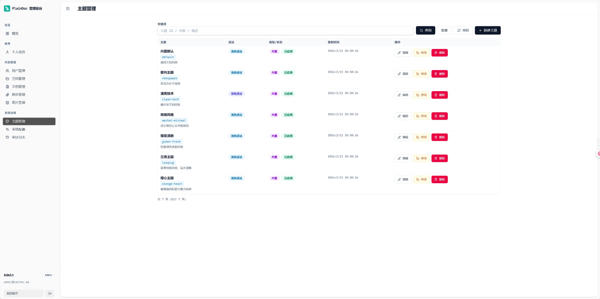
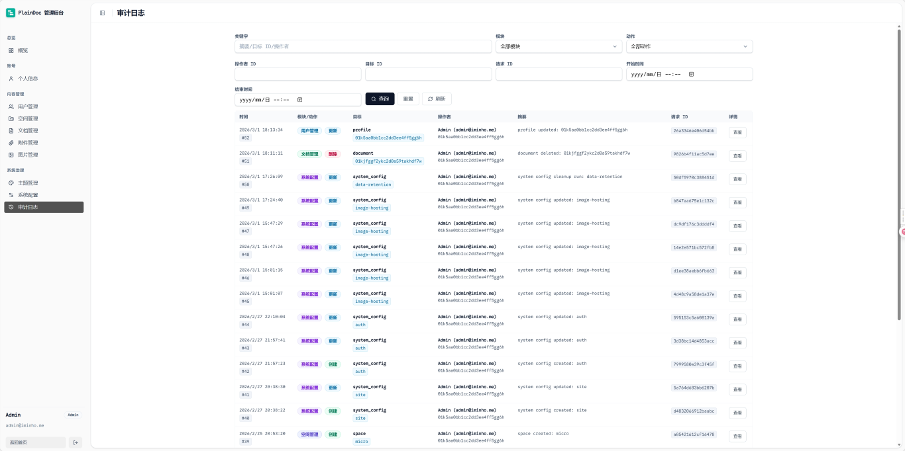
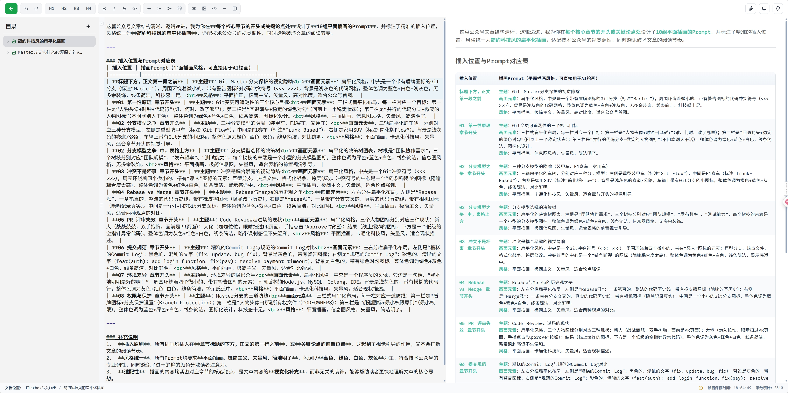
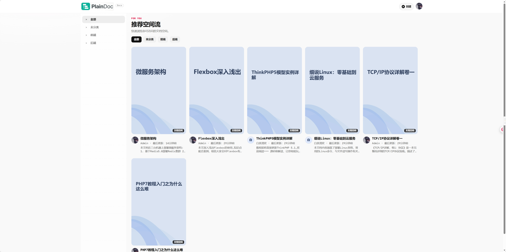
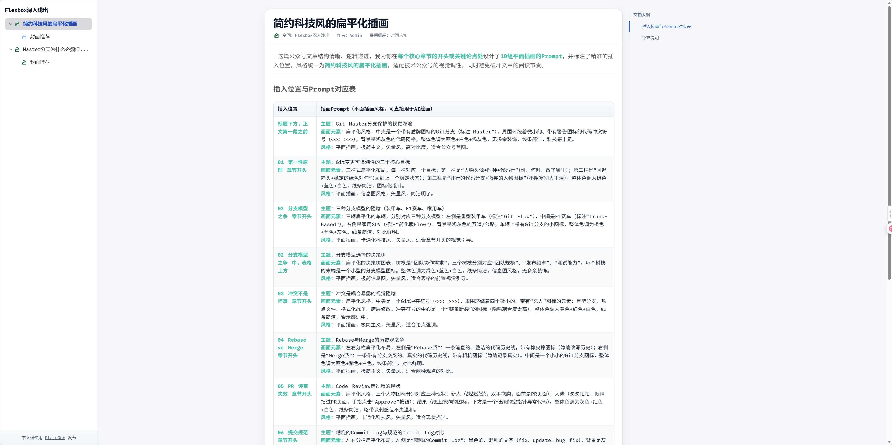
开发与生产路径一致，适合团队快速落地。
开箱即用，可直接启动完整服务链路与持久化卷。
后端 Go + 前端 Vite 分开运行，便于联调与快速迭代。
支持服务端二进制与前端构建产物分发，适配裸机与云主机。
从 README 的快速部署开始，10 分钟内你就能看到完整的 PlainDoc 运行效果。